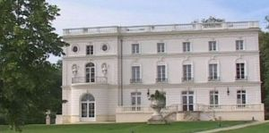
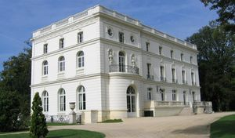
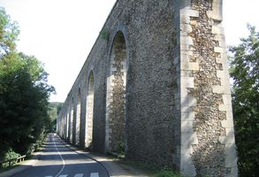

Recensement Jean-Claude Truffet
| Département | 78 — Yvelines |
| Canton | Versailles |
| Commune | Buc-Versailles |
| Type d'édifice | Chateaux |
| Période d'origine | XIX-XVIII |



Deux châteaux dans cet article; Buc et Sauvegarde. BUC Rattaché au bailliage royal à la fin du XVIIe siècle, et situé dans le grand parc de Versailles de l'époque, servit à Louis XIV, alors roi de France, à héberger son fils naturel le comte de Toulouse et duc de Penthièvre, Louis Alexandre de Bourbon, qu'il eut de Madame de Montespan, et à le soustraire ainsi aux yeux de la cour avant qu'il ne soit légitimé en 1681. En 1740, le château fut détruit sur ordre de Louis XV, un autre édifice fut érigé sur l'emplacement, entre 1864 et 1866. Ce nouveau château fut construit pour Léon Thomas, riche bourgeois parisien, avant d'être acheté en 1893 par Noël Bardac. Cédé en 1918 à Gentilli di Giuseppe, astronome passionné qui installera dans les jardins, en 1922, un télescope géant. En 1929, il est acquis par un couple américain, les Mac Cune. Pour honorer au mieux ses invités, Madame Mac Cune avait transformé le domaine en un véritable "petit Versailles" ; le parc fut aménagé avec de belles fontaines et des statues, les allées tirées au cordeau, les buis taillés et une magnifique roseraie. Endommagé pendant la deuxième guerre mondiale, les propriétaires vendirent le domaine. En 1954, l'État rachète la propriété et l'utilise comme bâtiment scolaire. La commune de Buc quant à elle, ne se l'approprie qu'en 1988 et le restaure en l'an 2000. Les jardins du château de Buc, aménagés par Éric Pouchain dans les années 90, aujourd'hui jardin public, possèdent une colonnade d'ordre ionique ainsi qu'un ensemble sculptural de cinq uvres, dont une allégorie de l'Air, une autre du Printemps, un sphinx, un couple de panthères et une Hébé avec l'aigle de Jupiter. Ces sculptures sont des copies d'uvres d'Étienne Le Hongre et de Pierre Ier Legros. Le domaine est aussi agrémenté d'un canal. BUC l'aqueduc érigé en 1684 pour le Roi Louis XIV afin d'alimenter les fontaines de Versailles, il amène l'eau dans les réservoirs ou les bassins de distribution de Montbauron et du parc aux cerfs.
SAUVEGARDE, la propriété existe depuis au moins le XVIIIe siècle, on aperçoit un jardin régulier sur la carte de Delagrive. Il est devenu paysager sur la carte des chasses avec un étang et une île artificielle et une allée rectiligne bordée d'arbres, dite allée des Philosophes. Le château actuel a été construit vers 1862 pour Pierre Huguier, chirurgien en chef de l'hôpital Beaujour à Paris. Le domaine est vendu en 1875 à François Pothier. C'est lui qui reconstruit les communs en 1875-76. Le château est occupé par François Pothier et son épouse, leur fille Elisabeth, vicomtesse de Castex et son époux Bertrand de Castex. La domesticité est très nombreuse: un concierge et sa femme, un régisseur et sa femme, deux cochers, deux valets de chambre, deux cuisinières, un maître d'hôtel, deux bonnes d'enfants. En 1923, le château est acheté par Alfred Wenz, négociant en laines, et qui le revend en 1944 à l'association de Sauvegarde des Yvelines qui y abrite des enfants et adolescents en difficulté, propriété d'une association.
Buc ; Léon Thomas Sauvegarde: Pierre Huguier et François Pothier,"
Deux châteaux dans cet article; Buc et Sauvegarde.